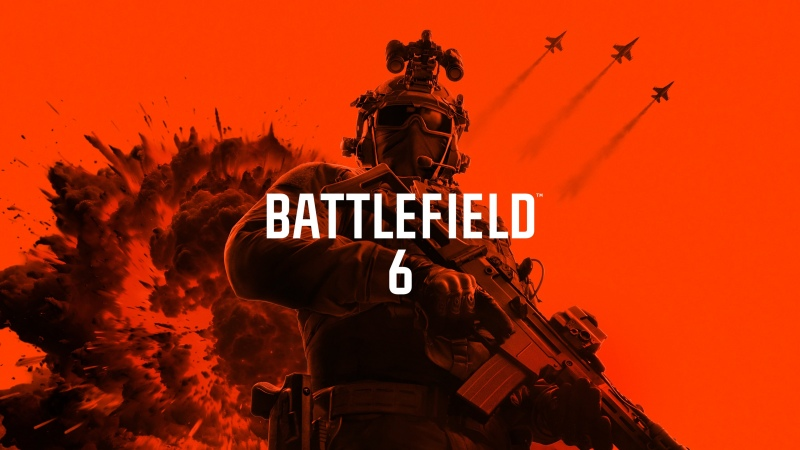

LANÇAMENTOS

Battlefield 6
A experiência definitiva da guerra total está de volta mais intensa, grandiosa e imprevisível do que nunca! Battlefield 6 eleva a franquia a um novo patamar de escala e imersão, proporcionando batalhas dinâmicas em cenários vastos e visualmente impressionantes. Prepare-se para enfrentar conflitos de infantaria de altíssima intensidade, onde cada passo pode significar a diferença entre a vitória e a derrota. Domine os céus em combates aéreos frenéticos, pilote caças de última geração e execute manobras ousadas enquanto disputa o domínio do espaço aéreo. Em terra, cada metragem conquistada exige estratégia, coordenação e adaptação constante às mudanças do campo de batalha. Com a Destruição Tática mais avançada da história da série, ambientes inteiros podem ser demolidos ou transformados a seu favor. Edifícios desabam, coberturas são destruídas e o terreno muda em tempo real, criando oportunidades estratégicas únicas e tornando cada partida verdadeiramente imprevisível. Em Battlefield 6, você não apenas joga em um campo de batalha, você vive nele.